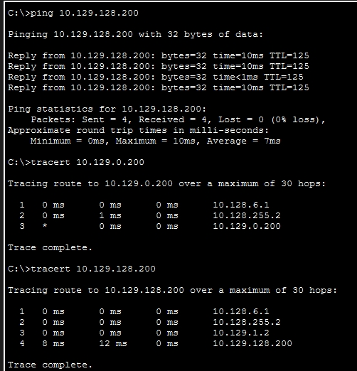
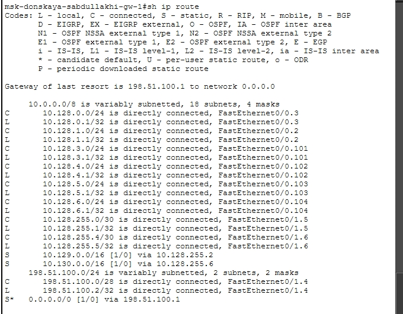
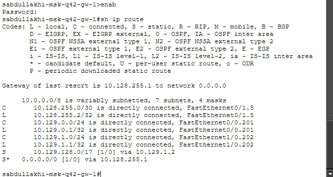
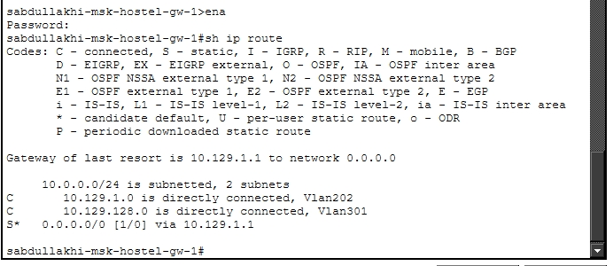

Настроить взаимодействие через сеть провайдера посредством
статической маршрутизации локальной сети организации с сетью основного
здания, расположенного в 42-м квартале в Москве, и сетью филиала,
расположенного в г. Сочи.
Трассировка маршрута до компьютера в 42-м квартале
рассировка маршрута до компьютера в общежитии

Проверка связи между устройствами в
Москве
Просмотр
таблицы маршрутизации на msk-donskaya-gw-1

Просмотр таблицы маршрутизации на
msk-donskaya-gw-1
Просмотр таблицы
маршрутизации на msk-q42-gw-1

Просмотр таблицы маршрутизации на
msk-q42-gw-1
Просмотр
таблицы маршрутизации на msk-hostel-gw-1

Просмотр таблицы маршрутизации на
msk-hostel-gw-1
3. Вывод
В ходе выполнения лабораторной работы №14 была настроена статическая
маршрутизация между тремя площадками: сетью провайдера, 42-м кварталом в
Москве и филиалом в Сочи. На всех маршрутизаторах и коммутаторах
выполнены необходимые настройки VLAN, транков, суб-интерфейсов и
IP-адресов. Добавлены статические маршруты, включая маршруты по
умолчанию, а также настроен NAT. Проверка с помощью ping и tracert
подтвердила корректную работу маршрутизации — потери пакетов
отсутствуют, трассировка показывает правильный путь. Таблицы
маршрутизации содержат все необходимые записи. Цель работы
достигнута.